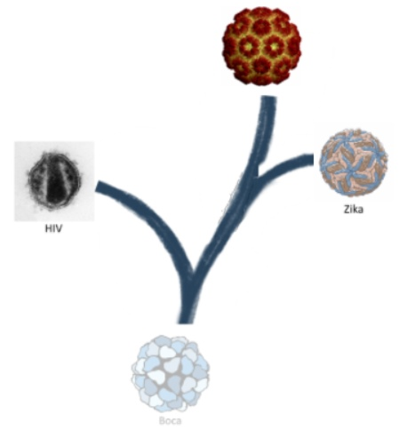

Virus, the Beauty of the Beast

Teaching resources
Press page
Press contact / bug reports:
ku.ca.de@ddoT.hsimaH
Additional Information
Other things by Hamish Todd
Other explorable explanations
More on viruses
More on spherical patterns (geodesic domes etc)
More sciencey art
Measles Erythrovirus Zika Virus Human Papillomavirus Bluetongue Virus HIV Carboxysome Bacteriophage T4 Bacteriophage Φ29 Hepatitis A Hepatitis B Semliki Forest Virus Sindbis Virus Rotavirus Bacteriophage HK97 Paramecium Bursaria Chlorella Virus Polio Yellow Fever Virus